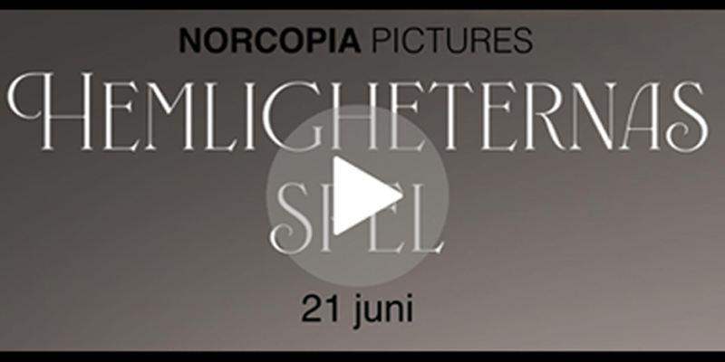

Storstadskillen Adrian flyttar till en ny stad för att börja sina universitetsstudier. Där möter han Eleonora, en gåtfull tjej med en adlig bakgrund från Östergötland. Eleonora blir Adrians vägvisare i den nya staden, hjälper honom hitta bostad och arbete.
Men snart upptäcker Adrian att den adliga familjen har mörka hemligheter. När den lokala kändisen plötsligt försvinner under ett av de adliga familjens evenemang, dras Adrian in i en farlig härva av intriger och mysterier. Polisen börjar nysta i fallet, och Adrian måste välja mellan att skydda Eleonora eller avslöja sanningen om hennes familj.